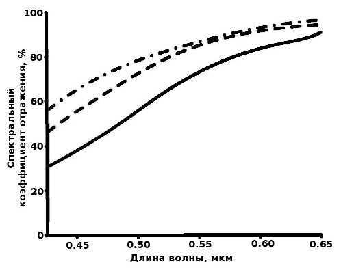
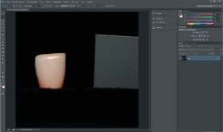
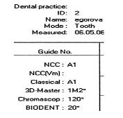
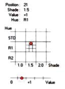
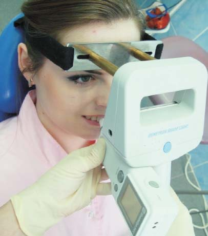
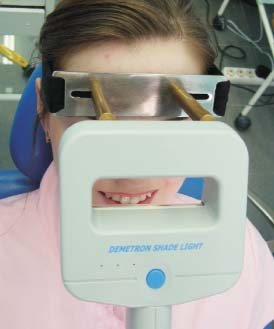
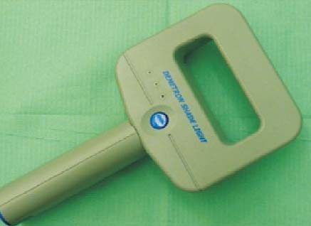
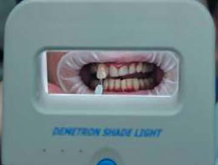
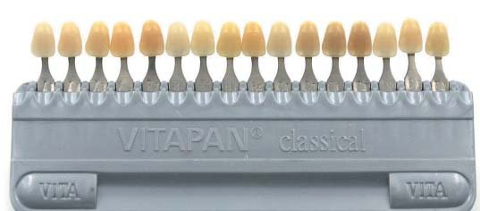
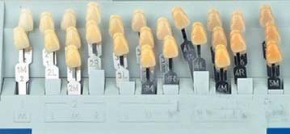

Наука · журнал «ДентАрт» 2019 №3
Методи визначення кольору зубів
METHODS FOR DETERMINING TOOTH COLOUR
Григорій ФлейшерУ сучасній стоматології широко обговорюються методи визначення кольору зубів. Людина у фізіологічній нормі спроможна розрізнити близько 150 кольорів, розрізняючи їх за тоном і яскравістю. У статті розглядаються різні методи визначення дисколориту, методи оцінки кольору зубів на основі аналізу цифрових фотографій, комп’ютерна методика визначення кольору зубів, прилади для визначення кольору зубів і т. д. Автор статті по-новому дає характеристику стандартних відтінків шкали VITA, приладу для визначення кольору SHADE EYE NCC, подано математичні формули при визначенні кольору зубів.
Людське око вловлює світлові хвилі, що лежать у певному інтервалі довжин та інтенсивностей (видимий спектр випромінювання). Потім мозок обробляє сигнали, які надходять, після чого в залежності від поєднання довжин хвиль і їх інтенсивностей людина сприймає предмети як по-різному забарвлені (мають різний колір). Око реагує на колір джерела світла (будь-який предмет, що випромінює, наприклад, сонце, лампа, лазер і т. д.) або на колір предметів, які відбивають або поглинають випромінювання джерела світла. Таким чином, можна сказати, що колір – це відчуття, а не властивість предметів. Властивість предметів, що не світяться самі, – пропускати, поглинати, розсіювати світло. Порівняння за яскравістю випромінюваних і відбитих «кольорів» не зовсім коректне, оскільки об’єкт, який відбиває, може флуоресціювати, а об’єкт (джерело), яке випромінює, може у своєму спектрі містити невидиму ультрафіолетову компоненту. У такому випадку, якщо компонента видимої частини спектру джерела відносно мала, відбите світло за своєю яскравістю може бути майже однаковим із світлом, що його випромінює джерело.
Відбиті і випромінювані тілами (предметами) кольори відрізняються. Так, випромінювані кольори завжди яскравіші, ніж відбиті, оскільки інтенсивність відбитого світла менша, ніж падаючого. Кількість кольорів, взагалі кажучи, безмежна. Колір залежить від властивостей джерела світла, інформації про оточуючі предмети, особливостей зору людини і т. д.
Є велике коло завдань, що вимагають вимірювання кольору (оцінка стану поверхні предмета, пошук предмета і т. д.). Наука про методи вимірювання кольору має назву колориметрія. Основою для математичного опису кольору в колориметрії є експериментально встановлений факт, що будь-який колір можна подати у вигляді суміші (або суми) трьох лінійно незалежних кольорів.
Лінійно незалежні кольори – це такі кольори, кожен з яких не може бути поданий у вигляді суми будь-яких кількостей двох інших кольорів. Існує безліч груп (систем) лінійно незалежних кольорів, але в колориметрії використовуються лише деякі з них. Три обраних лінійно незалежних кольори називають основними/базовими кольорами. Вони визначають колірну координатну систему. Фактично основу всіх колірних координатних систем становлять кольори, що відповідають монохроматичним випромінюванням з довжинами хвиль 0.4358 мкм (синій), 0.5461 мкм (зелений) і 0.7000 мкм (червоний).
Коректний опис кольору зуба надзвичайно важливий для сучасної стоматології. Колір – один з ключових параметрів при оцінці результату пломбування, гігієнічної процедури, відбілювання і т. д. Методи, які використовуються для оцінки зміни кольору зубів у процесі їх обробки (гігієни, відбілювання та ін.), можна розподілити на такі:
- візуальні;
- спектрофотометричні;
- колориметричні;
- аналіз цифрових фотографій;
- комп’ютерна методика визначення кольору зубів.
Візуальні методи застосовуються зазвичай у клінічних умовах. У цьому випадку робиться порівняння кольору зубів з еталоном.
Для візуальної оцінки кольору зубів використовуються набори з еталонами стандартних відтінків (Vita Classical, Vita 3D-Master, Chromascop, Esthet-X HD True Match, Bioform, Empress CAD, 3M Paradigm C).
Загальноприйнята шкала еталонів стандартних відтінків – шкала VITA. У таблиці 1 пояснюється будова класичної шкали VITA, яка має 16 колірних відтінків, орієнтованих тут за світлотою від найсвітлішого до найтемнішого.
Шкала VITA – це набір зразків з кераміки, оскільки остання за світловідбивними властивостями схожа з емаллю зубів.
Відтінки позначаються літерами і цифрами. Літера (A, B, C, D) означає певний колір:
- A – червоно-коричневий;
- B – червоно-жовтий;
- C – сірий;
- D – червоно-сірий.
Цифра характеризує світлоту (1 – найсвітліший, 4 – найтемніший). Сьогодні існує безліч модифікацій шкали VITA, але найповнішою з них вважається 3D-MASTER. У цьому випадку відтінки позначаються як цифра – літера – цифра. Перша цифра (від 1 до 5) позначає світлоту відтінку, який вибирається на першому етапі оцінки; літера (L, M, R) – ступінь «жовтизни» (L) і «червоності» (R), M – середнє; друга цифра позначає інтенсивність (насиченість) кольору: 1, 1.5, 2, 2.5, 3. На другому етапі оцінки вибирається насиченість по групі M, на третьому – група L, M або R. Подібний принцип поєднання колірних відтінків, їх світлоти та/або насиченості кольору реалізується для всіх еталонних наборів.
Визначення кольору зубів може залежати від суб’єктивного сприйняття відтінків, освітленості і фону приміщення, одягу пацієнта, втоми при тривалому спостереженні. У зв’язку з цим використовується ряд приладів, що дозволяють визначити відтінок автоматично (портативні спектрофотометри, колориметри, цифрові фотокамери). Наприклад, прилад Shade-X (X-Rite, Inc.) містить дані про різні модифікації шкали VITA та інших шкал. Прилад укомплектований спеціальними насадками, які при оцінці кольору щільно притискаються до поверхні емалі і відтак усувають вплив зовнішніх умов освітлення.
Спектрофотометричні методи, використовувані в лабораторних дослідженнях (в експериментах in vitro), передбачають вимірювання спектрального коефіцієнта відбиття (дзеркальне і дифузне відображення) у видимій зоні спектру. Будь-який об’єкт відбиває межею розділення та об’ємом. Відбиття об’ємом завжди дифузне, відбиття межею розділення може бути дифузним, якщо поверхня матова, або дзеркальним, якщо поверхня глянцева. У залежності від кута падіння співвідношення відбиттів від межі розподілу і від об’єму може бути різним. Зі збільшенням кута падіння кількість світла, відбитого межею розділення (френелівське відбиття), збільшується, відповідно кількість світла, відбитого об’ємом, зменшується. Тому за великих кутів падіння не завжди зрозуміло, якого кольору об’єкт, оскільки колір заданий відбитим світлом, що виходить з об’єму, навіть якщо це непрозорий метал. Збільшення коефіцієнта відбиття по всьому видимому діапазону спектра приймається як позитивний результат, тобто свідчить про посвітлішання зубів. На рис. 1 подано приклад результату таких вимірювань.

У клінічних умовах вимірювання коефіцієнта відбиття (відбивної здатності) тканин зуба у видимому діапазоні спектра провадиться через обмежений доступ у ротовій порожнині при освітленні зуба під кутом 45° і спостереженні під кутом 0° (45/0). У пристроях галогенові або світлодіодні джерела світла. Світло надходить до зуба за допомогою світловодів та лінз і рівномірно освітлює все поле зору під кутом 45°. Вимірювання провадяться з кроком 1-25 нм. Прикладом таких пристроїв є портативні спектрофотометри: SpectroShade, Vita Easyshade, Shade-X, CrystalEye.
Колориметричні методи як джерело світла використовують три або чотири світлодіоди зі світлофільтрами, які коригують спектр їх випромінювання. Вимірювання відбувається у трьох зонах спектру: червоний, зелений і синій. Колориметри не реєструють спектральний коефіцієнт відбиття і можуть бути менш точними, ніж спектрофотометри. Приклади таких пристроїв – Shade Eye NCC та ShadeVision.
Аналіз цифрових фотографій, отриманих за допомогою інтраоральних фотокамер і цифрових фотоапаратів, дозволяє ефективно оцінити зміну кольору зубів у результаті їх обробки (гігієнічного чищення, відбілювання і т. д.).
У деяких колориметричних (ShadeScan) і спектрофотометричних (SpectroShade) приладах суміщені пристрої для спектрального аналізу і отримання кольорових зображень. Такі прилади можуть бути оснащені оригінальними програмами для автоматичного аналізу кольору зубів за фотографіями. Оцінка кольору зубів за цифровими фотографіями може провадитися за допомогою програм Adobe Photoshop, Corel Photo-Paint, PaitShop Pro, а також за допомогою спеціалізованого програмного забезпечення для роботи зі знімками, встановленого на персональний комп’ютер або безпосередньо на вимірювальний прилад, наприклад ClearMatch.
Один з методів оцінки кольору зубів на основі аналізу цифрових фотографій називається DOTСAM – Digital Objective tooth color analysis method (Walsh L. J. і співавт., 2004). Метод заснований на аналізі фотографій в системі RGB. У цій системі показовим каналом є канал B – синій. Він найточніше відображає «білизну» зубів. Фотографування робиться з використанням «темного» і «світлого» еталонів (grey card – сіра карта, еталони стандартних відтінків і т. д.). За фотографіями вимірюється інтенсивність каналу B на досліджуваному зубі (у виділеній зоні) – B зуба, а також на «темному» – B темн. і «світлому» – B св. еталонах. «Білизна» зуба B середн. визначається відношенням
Чим ближче B зуба до B св., тим ближче В середн. до одиниці і тим вища «білизна» зуба.
Широко використовується метод оцінки кольору зубів на основі аналізу цифрових фотографій у колірній моделі CIE Lab. Згідно з Bengel W. M, 2003, колірна модель Lab дозволяє адекватно оцінити результат відбілювання зуба. У рамках цієї моделі компонент L характеризує «світлоту» зуба, a – його «червоність», b – «жовтизну». У роботі Bengel W. M, 2003 зазначається, що особливий інтерес становлять параметри L і b.
Додатково до цих параметрів аналізують ще Δb, ΔE, основний колір Hue і його насиченість Chroma.
де b0 – значення «жовтизни» зуба до процедури відбілювання (або еталону); b – значення «жовтизни» зуба після процедури відбілювання.
де L0/a0/b0 – значення «світлоти» / «червоності» / «жовтизни» зуба до процедури відбілювання (або еталону, наприклад A1 за шкалою VITA); L/a/b – значення «світлоти» / «червоності» / «жовтизни» зуба після процедури відбілювання.
Chroma = √(a² + b²)
Колір зуба людини, виміряний з використанням приладу Vita Easyshade в моделі CIE Lab, має такі значення параметрів: L = 55.500 – 89.674; a = 3.600 – 7.374; b = 3.600 – 38.974.
Кольори еталонів класичної шкали VITA, виміряні з використанням приладу Color-Eye 7000A в моделі CIE Lab, подано в таблиці 1.
| Відтінок | L | a | b |
|---|---|---|---|
| B1 | 59.8 | – 1.2 | 5.2 |
| A1 | 60.8 | – 1.0 | 6.4 |
| B2 | 61.0 | – 0.7 | 9.9 |
| D2 | 55.2 | – 0.4 | 5.5 |
| A2 | 59.8 | 0.3 | 9.2 |
| C1 | 56.0 | – 0.7 | 7.0 |
| C2 | 53.9 | 0.0 | 10.0 |
| D4 | 52.9 | – 0.2 | 12.3 |
| A3 | 57.5 | 0.8 | 11.8 |
| D3 | 54.6 | 0.5 | 8.6 |
| B3 | 55.6 | 0.8 | 15.1 |
| A3.5 | 55.4 | 1.4 | 13.9 |
| B4 | 55.9 | 0.9 | 16.3 |
| C3 | 51.7 | 0.5 | 11.1 |
| A4 | 52.4 | 1.8 | 14.3 |
| C4 | 47.4 | 1.7 | 12.47 |
Розглянемо методику оцінки кольору емалі зуба людини та результату його відбілювання з використанням колірної моделі простору Lab.
Аналізується цифровий кольоровий фотознімок, на якому є зображення поверхні коронки зуба людини та зображення еталону (grey card; див. фото 1).

Зазвичай фотознімок створюється фотоапаратом у колірному просторі моделі RGB. Аналіз зображення на фотознімку передбачає виконання такої послідовності дій:
- Запустити програму Adobe Photoshop.
- Відкрити фотознімок зуба до відбілювання (поєднання клавіш «Ctrl+O») у вікні програми Adobe Photoshop (фото 1).
- Відкрити діалог «Рівні» (Зображення – Корекція – Рівні або поєднання клавіш «Ctrl+L»). З’явиться гістограма і три інструменти «піпетки». Вибрати середню «піпетку» і клацнути нею в зоні «сірої карти» на фотознімку. Прийняти отримані зміни.
- Змінити RGB на Lab (Зображення → Режим → Lab).
- На розширеному вигляді вікна «Гістограма» з’являться параметри, позначені як Поєднаний, L, a і b. Слід пам’ятати, що отримувані тут числові значення подані у спеціальних одиницях виміру програми Adobe Photoshop – від 0 до 255. Тому для їх переведення у загальноприйняті одиниці виміру системи CIE (Commission Internationale de l’Eclairage) – од. CIE Lab – потрібно провести додатковий перерахунок за такими формулами:
LCIE = LAPh · 100/255; aCIE = aAPh – 128; bCIE = bAPh – 128де LAPh/aAPh/bAPh – результат оцінки відповідних колірних компонентів, виконаний за допомогою програми Adobe Photoshop; LCIE/aCIE/bCIE – результат перерахунку відповідних колірних компонентів в одиниці виміру системи CIE (L*a*b).
- Потрібно відрегулювати яскравість зображення. Вона виражена тут значенням L. Повна яскравість зображення може бути змінена шляхом дій Зображення → Корекція → Яскравість/Контраст. Рівень яскравості регулюється до значення L «54». Ця дія доводить яскравість grey card до фіксованого значення, яке потім можна порівняти з яскравістю інших зображень.
- Виділити на фотознімку аналізовану зону на поверхні зуба за допомогою інструменту «Ласо». Результатом стане її обведення ламаною лінією. Ця лінія вказує, що всі вимірювання тепер будуть стосуватися тільки (!) зображення всередині її меж.
- Якщо на аналізованій ділянці зуба є світлові відблиски чи будь-які дефекти, то для їх усунення можна додатково використати інструмент «Чарівна паличка», утримуючи клавішу «Alt». Якщо відблисків і дефектів не спостерігається або їх зовнішні прояви незначні, то цей пункт можна пропустити.
- У розширеному вигляді вікна «Гістограма» будуть міститися шукані оцінки значень L, а і b для обраної зони зуба. Тут передусім цікавлять дані про їх середні арифметичні значення і про величину стандартного відхилення.
- Повторити пп. 2-9, аналізуючи фотознімок зуба, отриманий після процедури відбілювання.
У результаті комплексного виконання пп. 1-10 з’являться три пари даних L0/L, a0/a и b0/b. Застосувавши формули, можна оцінити результат відбілювання. Якщо Δb<0, то результат відбілювання можна вважати позитивним.
Комп’ютерна методика визначення кольору зубів
При комп’ютерному методі визначення кольору зубів для наступного виконання естетичної реставрації ми використали колориметр комп’ютерний SHADE EYE NCC фірми Shofu Inc. Японія (фото 2) і програму Shade Eye Viewer, встановлену на базі програмної оболонки Windows 98 (фото 3). Shade Eye Viewer – це програмне забезпечення для SHADE EYE NCC, яке дозволяє створити базу даних і занести в неї всі проведені дослідження.
Колориметр зручний, з бездротовим вимірювальним пристроєм, компактний і простий, містить програми: «зуб», «кераміка», «аналіз».
Програма «зуб» – визначення кольору за шкалами кольорів і основними характеристиками кольору, такими як колір, інтенсивність (дані змінюються в діапазоні від малої інтенсивності 0,5 до оптимальної інтенсивності 6,0); яскравість, насиченість (починаючи від діапазону стандартного кольору А = STD, показник яскравості змінюється від малої величини до великої: -3, -2, -1, STD, +1, +2); відтінок, тон (починаючи від діапазону стандартного кольору А = STD, показники розподіляються від червонуватих R1, R2 до жовтуватих Y1, Y2, Y3 – колірна група В, STD – стандарт).
Програма «кераміка» дозволяє визначити колір керамічної реставрації і отримати роздруківку на кількість частин маси, потрібну для одержання певного відтінку зубів; програма «аналіз» – насиченість твердих тканин синім -b, жовтим + b, червоним + a, зеленим -a, L чорним – білим пігментами у тризначній системі координат «Lab» (рис. 2).

Отримані результати вимірювання у програмі «зуб» виводяться на інформаційному дисплеї датчика і роздруковуються вбудованим у базисний модуль приладу принтером. Принтер SHADE EYE NCC роздруковує дані вимірювання у двох формах: текст, графіка (рис. 3 а, б).

У текстовому форматі відображає: індивідуальний номер, ім’я досліджуваного, програму вимірювання, дату дослідження, концепцію природних кольорів, зареєстрований товарний знак фірми SHOFU, колірну шкалу, що відповідає керамічним масам системи Halo Vintage, колірні шкали VITA Classical і VITA 3D-Master.
Роздруківка даних вимірювання у графічному форматі відображає три характеристики кольору: колір, інтенсивність; яскравість, насиченість; відтінок, тон.
Дані вимірювань у режимі «кераміка» ґрунтуються на системі вибору кольору зубів за рецептом, адаптованим до керамічних мас Halo Vintage 45 (США), після чого виготовлялися вініри для відновлення естетики усмішки.
Колір зубів визначали за допомогою:
- приладу для визначення кольору SHADE EYE NCC фірми Shofu Inc. Японія;
- безтіньової лампи Demetron Shade Light;
- приладу для визначення кольору зубів (патент на корисну модель №107048 від 10 серпня 2011 року).


Прилад для визначення кольору зубів (фото 4 а, б) містить джерело світла – безтіньову лампу і стрічкову пов’язку, що має з двох боків липучки і фіксується на голові пацієнта паралельно франкфуртській горизонталі, з двома пластмасовими обмежувачами довжиною 7 сантиметрів, що розташовуються на рівні вертикальних зіничних ліній очей пацієнта, на які встановлюється безтіньова лампа. Використання обмежувачів дозволяє уникнути такої хиби, як залежність освітленості від відстані до об’єкта, що освітлюється. При наближенні цього пристрою до поверхні зубів менш ніж на 7 сантиметрів відбувається спотворення при сприйнятті кольору людським оком, створюючи ефект засліплення відбитим світлом. У той час як при віддаленні безтіньової лампи від об’єкта освітлення більш ніж на 7 см створюється протилежний ефект – недостатнього освітлення, оскільки з випромінюваним світлом змішується навколишнє освітлення інших штучних джерел світла і відбувається спотворення даних при підборі кольору реставрації. Крім того, це призводить до зайвого перенапруження очей лікаря та асистента, що ускладнює подальшу роботу, а також до незадоволеності пацієнта виконаною роботою і конфліктів між пацієнтом та лікарем.
Крім комп’ютерного методу, ми використали і візуальний контроль правильності й точності визначення кольору зубів за допомогою шкали 3D-Master, варіант Toothguide. Ця шкала в комплексі з комп’ютерним методом визначення кольору зубів дозволяють з максимальною точністю гарантувати якість і успішний результат лікування, а також уникнути ймовірних конфліктних ситуацій після відновлення естетики усмішки. Визначення кольору робили за допомогою запатентованого приладу для визначення кольору зубів (патент на корисну модель №107048 від 10 серпня 2011 року), який включає безтіньову лампу Demetron Shade Light (фото 5), стрічкову пов’язку, що має з двох боків липучки і фіксується на голові пацієнта, з двома пластмасовими обмежувачами, на які встановлюється безтіньова лампа, і прилад для визначення кольору SHADE EYE NCC, яким робилося визначення кольору зубів за двома колірними шкалами VITAPAN Classical (фото 6) і Vita Toothguide 3D Master (фото 7), а також оцінка кольору зубів здійснювалася візуально за допомогою двох колірних шкал VITAPAN Classical і Vita Toothguide 3D-Master при денному освітленні. Освітленість природним світлом залежить не лише від часу доби, але й від погоди (ясно, хмарно), пори року (зима, літо), географічного розташування.




Підбиваючи підсумок написаному, хочеться підкреслити, що є безліч методів і способів визначення кольору зубів/дисколориту.
Література
- Беликов А. В., Грисимов В. Н., Скрипник А. В., Шатилова К. В. Лазеры в стоматологии (Часть 1). – СПб: Университет ИТМО, 2015. – 108 с.
- Гринволл Л. Методики отбеливания в реставрационной стоматологии. Иллюстрированное руководство. Пер. с англ. М: Издательский дом «Высшее образование и наука», 2003. – 304 с.
- Жданов С. Е. Совершенствование методов эстетической реставрации зубов для повышения качества лечения: дисс. к.м.н./С. Е. Жданов. – Нижний Новгород, 2015. – 191 с.
- Инструкция по применению: Shade-X User Manual. [Электронный ресурс]. Режим доступа: http://www.xrite.com/documents/manuals/en/DSI-500_ShadeX_User_Manual_en.pdf
- Инструкция по применению: VITA Toothguide 3D-MASTER. [Электронный ресурс]. Режим доступа: https://www.vita-zahnfabrik.com/en/VITA-Toothguide-3D-MASTER-26230.html
- Оптическая биомедицинская диагностика. В 2 т. Т. 2 / Пер. с англ. Под ред. Тучина В.В. М: Физматлит, 2007. 368 с.
- Теория цвета. Математические цветовые модели. [Электронный ресурс]. Режим доступа: http://www.adobeps.ru/download/photoshop-lessons/41-teorija-cveta.html
- Agrawal V. S., Kapoor S. Color and shade management in esthetic dentistry // Univ. Res. J. Dent. 2013. V. 3, No 3. P. 120-127.
- Bengel W. M. Digital photography and the assessment of therapeutic results after bleaching procedures // J. Esthet. Restorat. Dent. 2003. V. 5, Suppl. 1. P. 21-32.
- Chu S. J., Trushkowsky R. D., Paravina R. D. Dental color matching instruments and systems. Review of clinical and research aspects // J. Dent. 2010. V. 385. P. e2-e16.
- Joiner A. The bleaching of teeth: A review of the literature // J. Dent. 2006. V 34. P. 412-419.
- Lima D. A. N. L., Aguiar F. H. B., Liporoni P. C. S., Munin E., Ambrosano G. M. B., Lovadino J. R. In vitro evaluation of the effectiveness of bleaching agents activated by different light sources // J. Prosthodont. 2009. V. 18, No 3. P. 249-254.
- Kim J.-G., Yu B., Lee Y.-K. Correlations between Color Differences Based on Three Color – Difference Formulas Using Dental Shade Guide Tabs // J. Prosthodont. 2009. V. 18. P. 135–140.
- Walsh L. J., Liu J. Y., Verheyen P. Tooth discolouration and its treatment using KTP laser-assisted tooth whitening // J. Oral Appl. 2004. V. 4, No 1. P. 7-21.